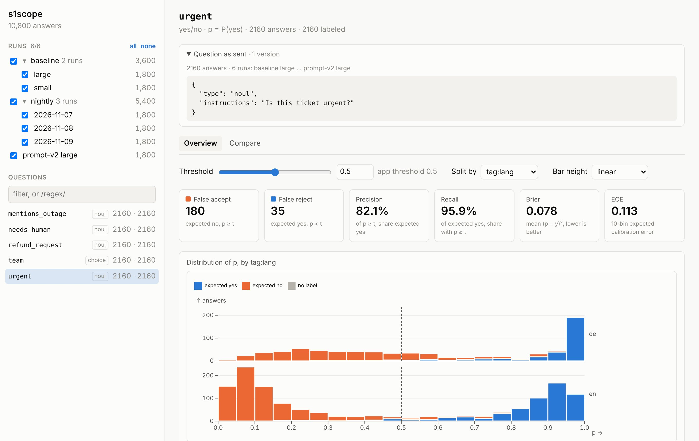
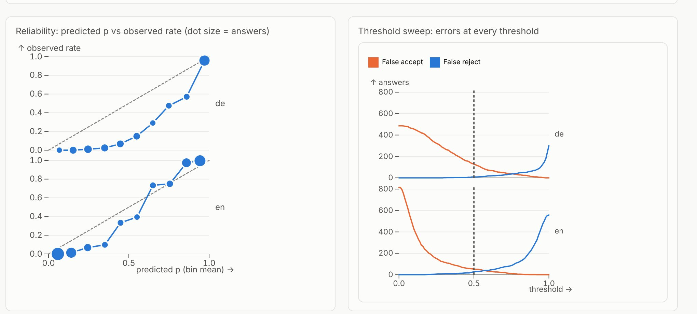
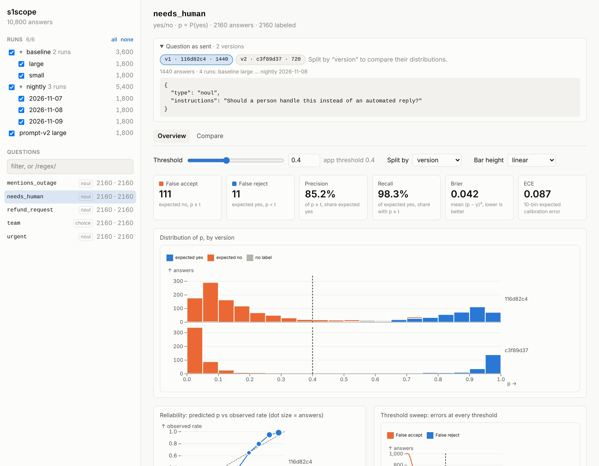
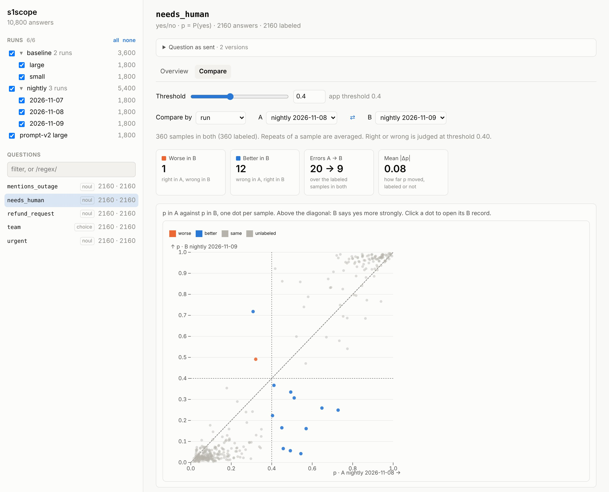
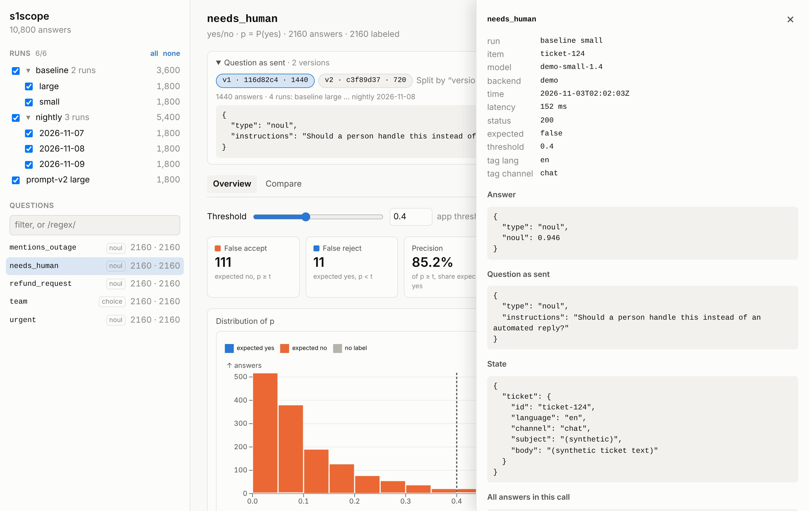

- The viewer is local and read-only: it serves on 127.0.0.1 and reads log folders in place. Logs can hold private prompts and state, so nothing is uploaded.
- A record can carry the threshold its application uses, and every count is computed at a threshold you can move.
- A shared sample id lines samples up across runs, so comparing two runs is a join, not a guess.
- Calls are stored in a small, documented JSONL format that any language can write.
Project showcase / Open source, MIT
s1scope
A local viewer for logged decision-model calls: per-question probability distributions, thresholds, calibration, and run-to-run changes.
Decision models answer typed questions with probabilities instead of text. Running one in production means choosing a threshold for each question and knowing what that threshold costs: how many wrong answers get through, how many right ones get stopped, and whether the probabilities mean what they say. s1scope (System One Scope) reads calls you have already logged against the System One API and answers those questions per question.
One question at a time
Every answer becomes a row: run, sample, question, probability, and the expected answer when a label exists. Picking a question shows the distribution of p colored by the expected answer, with the threshold drawn across it. False accepts, false rejects, precision, recall, Brier score, and expected calibration error update as the threshold moves. Any view can be split by run, model, backend, question version, or a tag recorded with the call.

The reliability curve compares predicted p with the observed rate, and the threshold sweep shows both error counts at every threshold from 0 to 1, so the cost of moving a threshold is visible before it ships.

Question versions
Question instructions change over time, and results from different wordings should not be pooled by accident. s1scope fingerprints the question exactly as it was sent, lists each version with its answer count and the runs that used it, and can split the charts by version.

Comparing two runs
The Compare view lines up two slices of the same question sample by sample: two runs, two models, or two question versions. It counts samples that became wrong and samples that became right at the current threshold, plots p in A against p in B, and lists the samples that moved the most. Clicking a point opens the record behind it.

Every number traces back to a call
Error lists, near-threshold lists, and comparison tables all open the underlying record: run, sample, model as resolved by the server, latency, tags, the question as sent, the state the model saw, every answer in the call, and the raw request and response.

Logging and running it
s1scope does not run evaluations. Calls are logged as JSONL, one call per line, by any backend that speaks POST /v1/systemone, such as TypeSafe Jev, Ollama’s local decision models, or OpenRouter. A small fetch wrapper records calls from Node and never writes the Authorization header. Labels can sit in the same files or separate ones.
npm install
npm run build
npx tsx scripts/make-demo.ts
node dist/src/cli.js view examples/demo
# open http://127.0.0.1:4747/Engineering choices
Built to tune the decision layer of the Narrative Memory Engine. Screenshots show synthetic support-ticket data; no real prompts or labels appear.